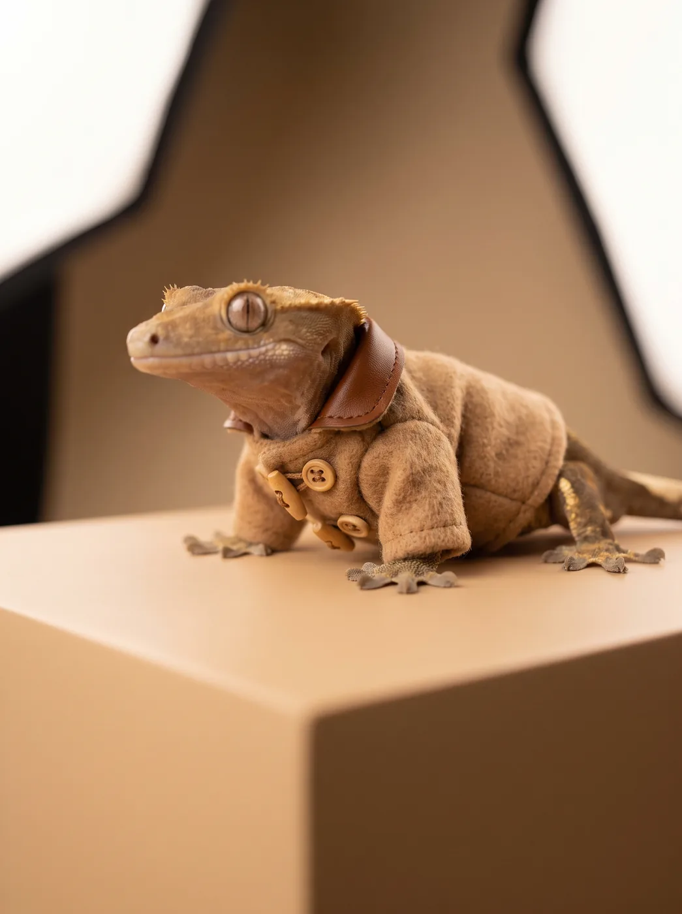
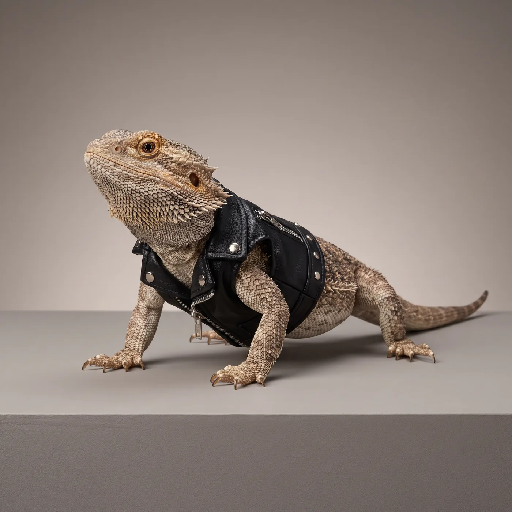
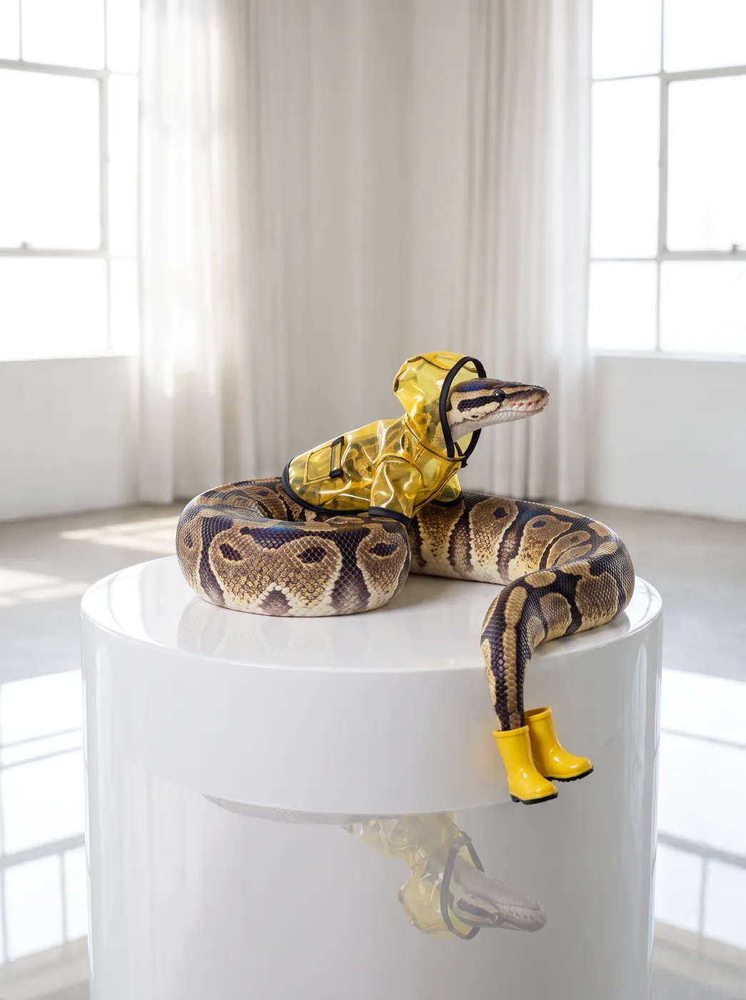
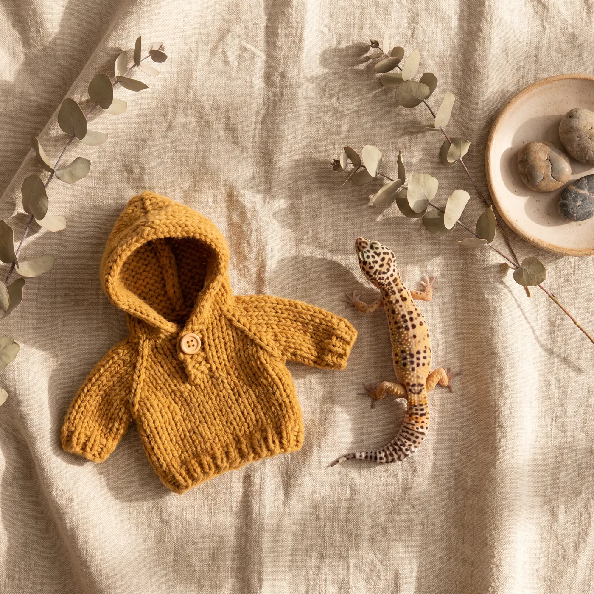
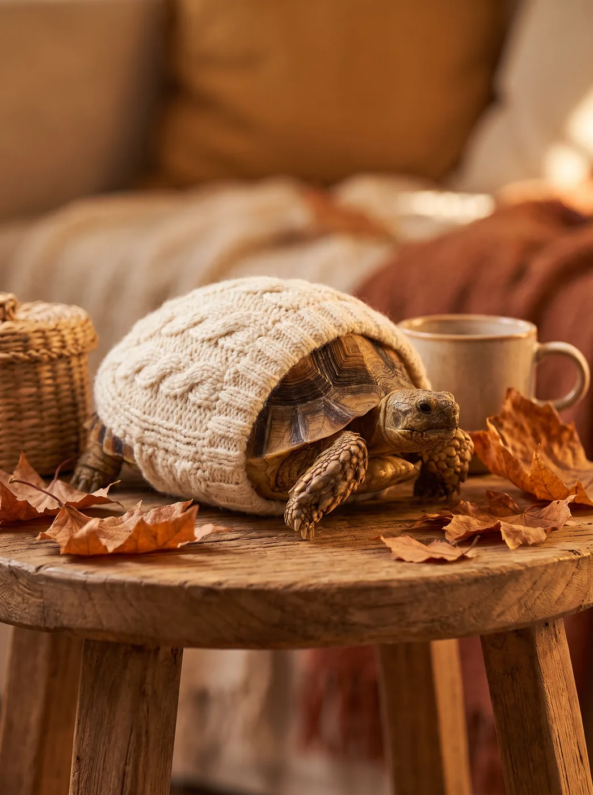
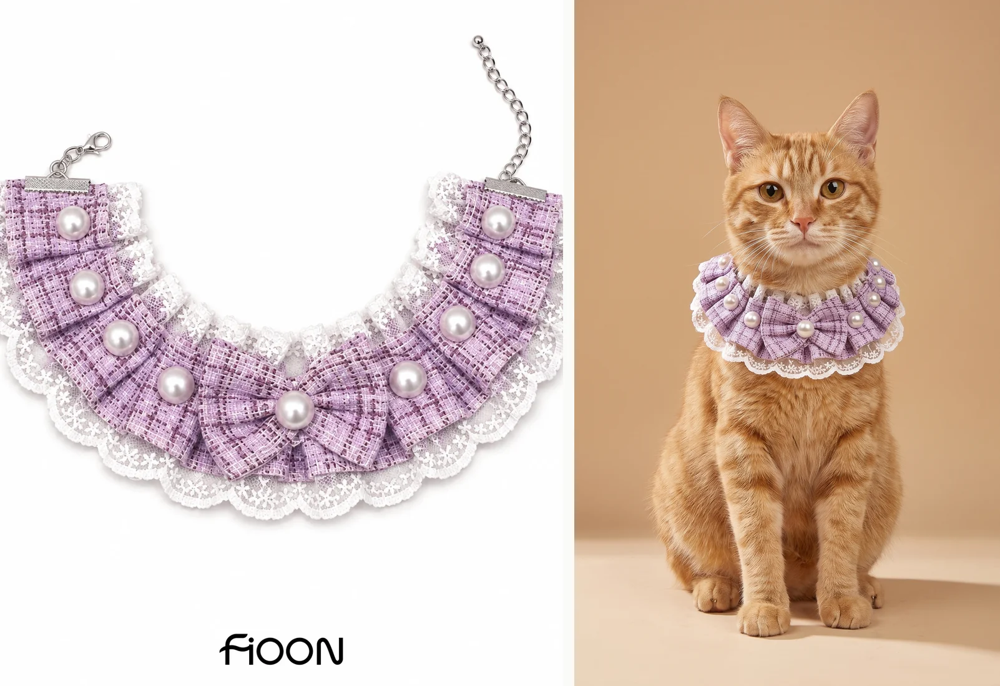

THE REPTILE FITTING ROOM
A little dress-up. For everyone.
Six pieces for pet reptiles, cut and finished the same way as the cat and dog collection.
Every reptile frame here is an AI-generated studio render of the FiOON reptile line.
The camel coat.
Crested gecko

The collection.
Five more pieces, one for each animal.






The pieces.
These are decorative garments for pet reptiles, cut and finished in the same fabrics as the cat and dog collection: wool, faux leather, knit and vinyl. Each one is made to the same measured fitting as the rest of the line. Every frame here was generated for the studio, so the garments are shown as designed rather than photographed on a live animal.
The studio.
The same studio that produced these frames also makes pet photography for other brands. Visit the pet photography studio ↗
Camel wool, faux leather, knit, vinyl. The reptile line.
Back to the store ↗